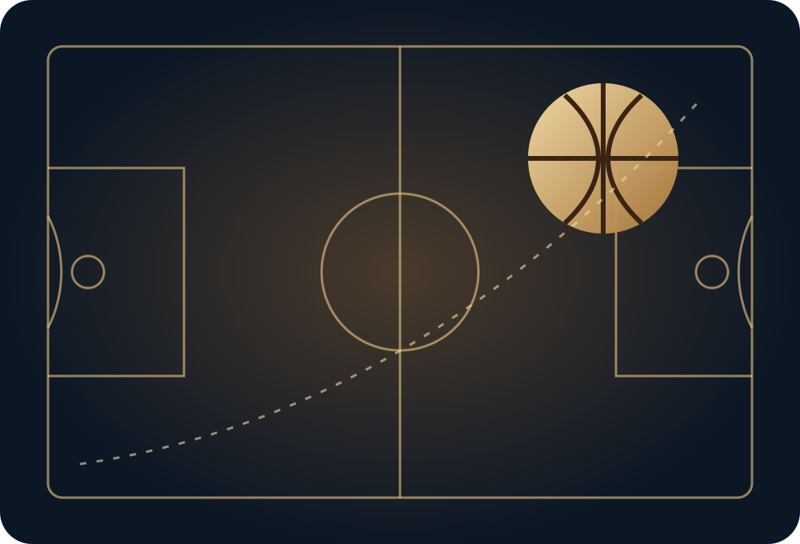
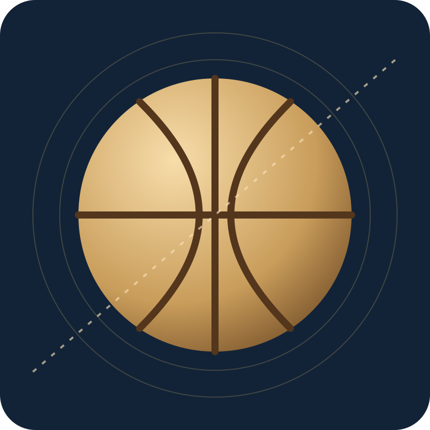

Game setting
Home advantage is estimated from historical results. The neutral option removes that effect.
The play before the play. The matchups behind the numbers. A clearer way to understand the NBA — and the evidence behind every prediction.
Start wherever curiosity takes you. Move from the question to the evidence without getting lost in another dashboard.
Explore records, scoring margins, and form when sourced statistics are available. Every figure has a meaning — and every gap in the data stays visible.
The idea behind Aureum / Our Mission
Basketball analysis should invite you in, not leave you guessing what the numbers mean. We turn complicated matchups into understandable research, while making every uncertainty visible.

THE COURT IS A QUESTION. THE DATA IS EVIDENCE.Explore our principles
A percentage matters only when you understand what it describes. We translate technical measures into useful basketball context, without pretending every number tells the whole story.
Put two franchises on the same page. Compare what their results actually say, with side-by-side context instead of numbers without explanations.
We distinguish completed-game evidence, archived pregame predictions, and adjustable hypothetical scenarios. No invented statistics. No disguised simulations. No false certainty.
Choose a finished matchup to compare both teams’ actual game statistics. Hover over any information icon for a short explanation. These are game results, not forecasts.
Sources: ESPN dated final scores and individual game box scores. Missing or unverified game statistics are clearly marked; we do not substitute season averages.
The same 30 verified regular-season statistics you see on Teams—now for two franchises, measured side by side. Select any two teams, compare their current numbers, and hover over i to understand each metric.
Aureum's current experimental pregame baseline uses the outcome history and game conditions known before the selected date. Statistical estimates and personal assumptions are kept separate.
Regularized logistic regression uses a chronological team rating, recent form, rest and home court. The 30 season metrics are supporting context, not additional predictors.
ESPN roster membership and dated status reports are retrieved regularly. Player status is not a confirmed lineup; player and tactical impacts remain optional, user-defined hypotheses.
Coefficients are fitted using earlier game dates and evaluated on later dates. Features are constructed only from prior-day completed games. Game Room displays sample size, accuracy and Brier score.
Estimated probability is the logistic transformation of the weighted rating difference, recent-form difference, rest difference and home-court term. Coefficients come from the training sample, with regularization. The rating and recent form are computed from past game results rather than the 30 reference metrics.
Hypothetical numerical changes, including assumed player impacts, affect a separate sensitivity estimate. They are not fitted injury effects. Estimates can be wrong and will be withheld when the underlying snapshot is stale or invalid.
Retrospective performance is reported with its train and test dates in Game Room. A later-game holdout is not the same as an independently recorded live forecast, and the early-season sample is limited.
Behind the research
Divit Walia · Founder
I'm interested in what happens when basketball intuition meets evidence. Aureum Tipoff grew from that curiosity: I wanted to explore the game more deeply and make statistical reasoning approachable to anyone who follows the NBA.
My goal isn't to make every forecast sound certain. It's to show what we know, what we're assuming, and what still needs to be tested. The better the evidence, the more meaningful the conversation.
Our Mission
We believe basketball analytics should be clear enough to question, responsible enough to admit uncertainty, and engaging enough to make you want to learn more.

Aureum Tipoff is an independent basketball intelligence project. Its goal is to make advanced basketball concepts approachable while holding predictions to a higher standard of transparency.
The name combines a gold-inspired identity with one of basketball's defining moments: the opening tipoff. The ambition is simple—help fans understand not just what happened, but why.
Explain every metric and why it matters.
Separate verified facts, assumptions, and uncertainty.
Never invent game outcomes, live information, or model performance.
The Gold Standard in Basketball Intelligence
Independent project. Not affiliated with the NBA or its teams. NBA team names are used for identification.
Build a transparent basketball scenario. These controls describe hypothetical conditions, not reported injuries or real team performance.
Saved only in this browser. Nothing is uploaded to a server.
A friendly guide to the 30 statistics displayed on every Teams profile. Definitions only—no live numbers. Search a term to learn what it means and why it matters.
30 statistics explained.
Use team form, scheduled rest, and confirmed player status available at the forecast timestamp.
Archive the exact pregame percentage. Never quietly replace a prediction after the result.
If games assigned 70% happen about 70% of the time, those forecasts are better calibrated.
Thirty stories, one league. Real team performance, explained without jargon.
Points per game is a scoring average, not a measure of possessions. Point differential summarizes scoring margin; it does not by itself explain opponents, player availability, or tactical matchup fit.
Explore how changing game conditions affect a matchup. Start with a tested, source-based baseline. Then make your own clearly labeled assumptions.
Choose a scheduled game or explore another pair of teams. Today's roster is not a promise of tomorrow's lineup.
Home advantage is estimated from historical results. The neutral option removes that effect.
Calculating from the latest completed-game dates.
Recent completed results, with small-sample adjustment.
Explore pace, travel, rotation, bench depth and style fit. Each assumption can be assigned an illustrative strength change; these effects are not learned player or tactical coefficients.
Player choices follow the selected team's latest retrieved roster. Dated reports are shown separately from what you assume. Choose a status and an optional, explicitly hypothetical strength adjustment.
Retrieving roster information…
Baseline model estimates and hypothetical adjustments are always identified separately.
The same numbers as Teams and Compare. This is supporting context, not 30 additional inputs to the probability calculation.
Actual results and current schedule from ESPN.
Loading the season calendar…
Explore dated 2026–27 NBA game results and schedules from an attributed third-party scoreboard. Completed scores are distinguished from games still in progress and from future fixtures. We show a feed error rather than an imagined result.
Checking source availability…
Source: ESPN NBA scoreboard. Additional official cross-check: NBA.com Games. Automated per-game independent cross-verification is not yet deployed.
Scores appear only when the feed supplies identifiable NBA teams, valid status, a matching game date, and plausible scores.
Game Room displays dated ESPN injury reports. A reported status alone does not establish the size of a player’s effect on a matchup.
Game Room publishes a chronological retrospective evaluation. Independent prospective accuracy requires recorded pretipoff forecasts and later results.
A professional NBA model must distinguish what it could measure from what it has actually measured. This atlas explains categories analysts use without presenting unverified features as current statistics.
Loading factor explanations…